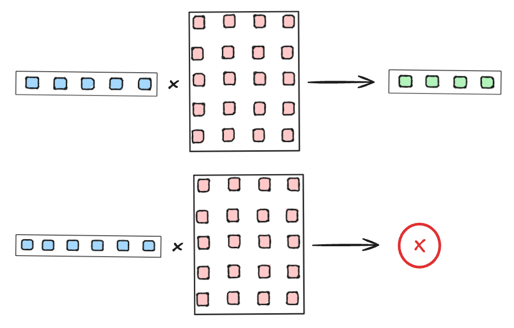
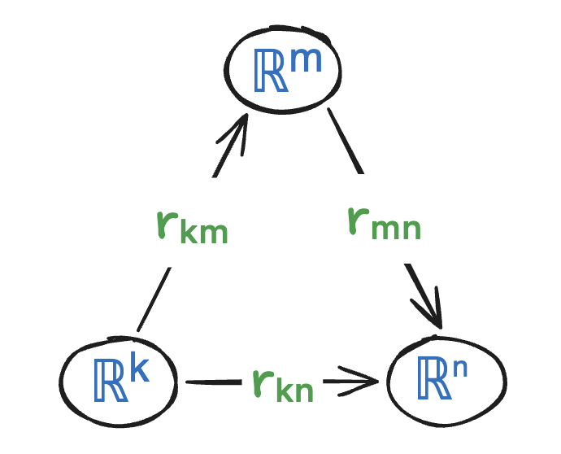
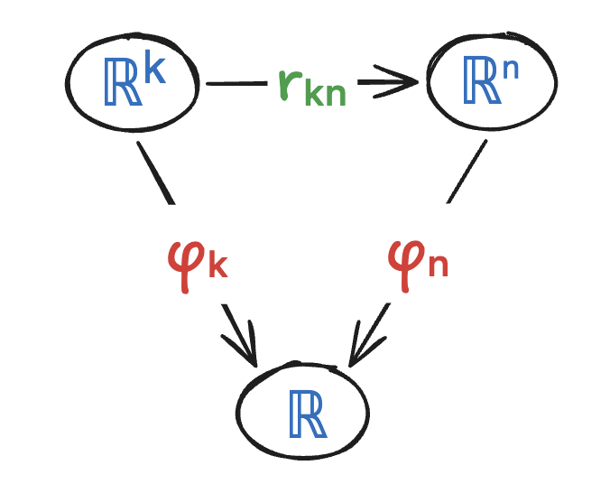
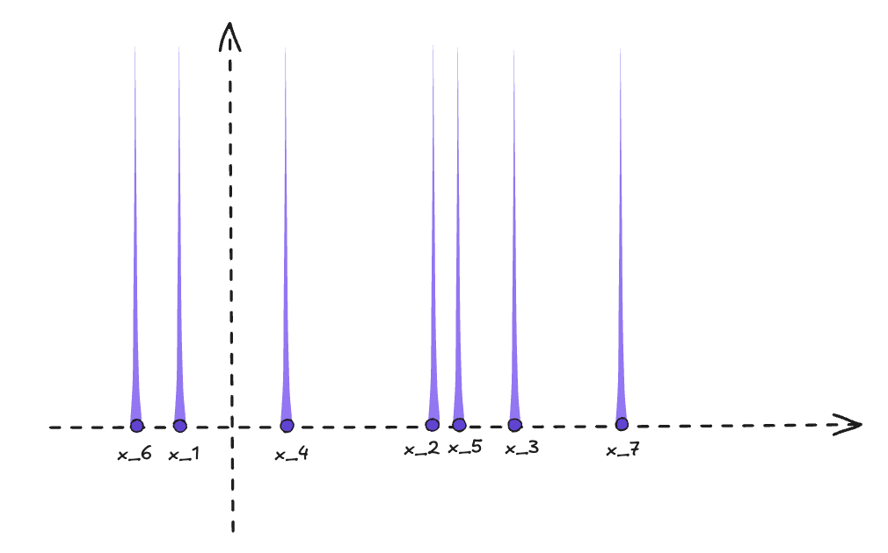

Dimensionless Operations, Part I
Part of a loose series on operations that don't care how big their input is. This first post lays out the ideas and pushes on them a bit; it is still a draft and does not end in a conclusion.
The puzzle
If you've ever coded a neural network in something like PyTorch, TensorFlow, JAX, or even scikit-learn, you've probably run into dimension-mismatch errors. These happen when an operation requires its input to have a specific dimension. There are, however, a few operations that don't care what the dimension of the input is, and can always be applied without error.

Matrix multiplication is the classic counterexample: the operator itself is tied to a fixed input dimension.
In this post we want to discuss operations on vectors and tensors, common in neural networks, that can be applied regardless of dimension. The goal is to understand what unifies this type of operation.
So what operations are we talking about? Some of the most basic examples are the sum, mean, min, and max of a vector or tensor:
x.sum(), x.mean(), x.max(), x.min()These naturally generalise to any dimension.
It's worth mentioning that some of these operations, like mean, median, and std, actually depend on the dimension through normalisation; we still consider them dimensionless, though, since there's a natural way to define them consistently for any dimension.
Pooling layers in Convolutional Neural Networks are a typical example of operations with this property.
Formalisation
So far, our definition of the type of operations we're considering is purely intuitive. Here we'll try to introduce some formalism.
Any operation applicable to vectors of any dimension is effectively a collection of functions, one for each dimension:
$$ \Phi = \big(\varphi_n \colon \R^n \to \R,\quad n = 1, 2, \ldots\big). $$so that $\Phi$ is defined by
$$ \Phi(x) := \varphi_n(x), \quad \forall\, x \in \R^n. $$However, to make sense of this we also need some kind of consistency condition — otherwise $\varphi_n$ could be a completely unrelated function for each $n$. This turns out not to be so straightforward: what should "consistency" even mean here?
Consistency condition: $\varphi_{n+1}$ should be "consistent with" $\varphi_n$.
Embeddings
One natural way to get this is to have a way to embed the lower-dimensional sets into the higher-dimensional ones. Consider a collection of mappings, which we'll call an R-system,
$$ \mathcal{R} = \big\{\, r_{k,n} \colon \R^k \to \R^n \;\big|\; k, n \ge 1 \,\big\}, $$with the property that the following diagram always commutes:

The R-system's own consistency: embedding $\R^k$ into $\R^n$ directly ($r_{k,n}$) agrees with going via any intermediate dimension $\R^m$ ($r_{m,n} \circ r_{k,m}$).
Consistency of $\varphi$ could then mean that the corresponding diagram commutes: embedding $x$ into $\R^{n+1}$ via $r_{n,n+1}$ and then applying $\varphi_{n+1}$ gives the same answer as applying $\varphi_n$ directly.

The consistency condition for $\varphi$: embedding into $\R^n$ via $r_{k,n}$ and then applying $\varphi_n$ should agree with applying $\varphi_k$ directly.
Natural R-systems for the operations we discussed above can be defined as follows. Write $m = \operatorname{max}(x_1,\ldots,x_k)$ (similarly for min, mean); then
$$ \begin{aligned} \operatorname{max}\colon &\ r_{k,n}(x_1,\ldots,x_k) = (x_1,\ldots,x_k, m, \ldots, m) \in \R^n, \quad m = \operatorname{max}(x_1,\ldots,x_k),\\ \operatorname{min}\colon &\ r_{k,n}(x_1,\ldots,x_k) = (x_1,\ldots,x_k, m, \ldots, m) \in \R^n, \quad m = \operatorname{min}(x_1,\ldots,x_k),\\ \operatorname{mean}\colon &\ r_{k,n}(x_1,\ldots,x_k) = (x_1,\ldots,x_k, m, \ldots, m) \in \R^n, \quad m = \operatorname{mean}(x_1,\ldots,x_k),\\ \operatorname{sum}\colon &\ r_{k,n}(x_1,\ldots,x_k) = (x_1,\ldots,x_k, 0, \ldots, 0) \in \R^n. \end{aligned} $$Notice the first three pad with copies of the aggregate's own value — exactly why they satisfy the idempotent-padding property (appending the mean/max/min to the data doesn't change it). Sum instead pads with $0$, its identity element, not its own value: padding with its own running sum would change the answer.
Recursive functions of streaming arrays
In all the examples above, there's a specific way to update the result of the operation once a new coordinate is added — this is exactly what you'd use to define sum, mean, max, etc. on a streamed array rather than a fixed-size vector:
$$ \begin{aligned} &\operatorname{Sum}_{n+1}(x_1, \ldots, x_n, x_{\text{new}}) &\,=\quad &\operatorname{Sum}_n(x_1, \ldots, x_n) + x_{\text{new}} \\ &\operatorname{Prod}_{n+1}(x_1, \ldots, x_n, x_{\text{new}}) &\,=\quad &\operatorname{Prod}_n(x_1, \ldots, x_n) \cdot x_{\text{new}} \\ &\operatorname{Max}_{n+1}(x_1, \ldots, x_n, x_{\text{new}}) &\,=\quad &\operatorname{max}\big(\operatorname{Max}_n(x_1, \ldots, x_n),\, x_{\text{new}}\big) \end{aligned} $$So in all the examples above, the operation builds on a two-argument operation. In general, given a link function $l(a, b) \colon \R^2\to \R$, which defines how we combine the previous value with a new coordinate, we build the mapping recursively like so:
$$ \varphi_{n+1}(x_1, \ldots, x_n, x_{\text{new}}) = l\big(\varphi_n(x_1, \ldots, x_n),\, x_{\text{new}}\big), \quad n\ge 1. $$or explicitly
$$ \varphi_n(x_1, \ldots, x_n) = l\Big(l\big(\cdots l\big(l(\varphi_1(x_1), x_2), x_3\big) \cdots, x_{n-1}\big), x_n\Big). $$In the case when $\varphi_1(x) = x$, the function builds itself from its two-variable version:
$$ \varphi_n(x_1, \ldots, x_n) = \varphi_2\Big(\varphi_2\big(\cdots \varphi_2\big(x_1, x_2\big) \cdots, x_{n-1}\big), x_n\Big). $$However, this isn't quite the case for statistical quantities like the mean:
$$ \operatorname{Mean}_{n+1}(x_1, \ldots, x_n, x_{\text{new}}) = \frac{n}{n+1}\operatorname{Mean}_n(x_1, \ldots, x_n) + \frac{1}{n+1}x_{\text{new}} $$Here, the update ("link") function is a slightly adapted version of the two-variable one, depending on the dimension. This is a consequence of the issue we already noticed: the mean actually depends on the dimension through scaling. If we removed that scaling we'd just be back to the sum. We can fix this by letting the link function itself depend on the dimension — assume there's a two-variable function
$$ l(a, b; n) \colon \R^2 \times \N \to \R $$which links the versions of our operation across different dimensions via:
$$ \varphi_{n+1}(x_1, \ldots, x_n, x_{\text{new}}) = l\big(\varphi_n(x_1, \ldots, x_n), x_{\text{new}}; n\big). $$One drawback of this formulation is that it misses a property shared by all the operations we considered so far: symmetry. The link-function formulation depends explicitly on the order of the coordinates.
In fact, an example of an operation covered by this more general, non-symmetric version is the Exponential Moving Average (EMA), which discounts earlier coordinates more heavily. EMA is realised via the following link function:
$$ \varphi_2(a, b) := (1 - \theta) \cdot a + \theta \cdot b, \qquad \theta \in (0, 1). $$The classical mean is a version of this with $\theta$ changing dynamically with the dimension: $\theta_n = \dfrac{1}{n+1}$.
We should mention, however, that not all operations we think of as dimensionless have the above structure. For example, std(), or even its unscaled version .var(), cannot be obtained by the above recurrence. Indeed, we have the following property
In the case of .var(), we have $\varphi_1 \equiv 0$, but $\varphi_2(x_1, x_2)$ in general depends on $x_1$, so we cannot get the identity
Nevertheless, .var() and .std() can be defined through a combination of such mappings:
This is because for any set of dimensionless operations $\varphi_1, \ldots, \varphi_k$ and any functions $f_i \colon \R \to \R$ (for $i = 1, \ldots, k$) and $F \colon \R^k \to \R$, the combined operation
$$ \varphi(x) := F\big(\varphi_1(f_1(x)), \ldots, \varphi_k(f_k(x))\big), \quad x \in \bigcup_{n \ge 1} \R^n, $$is also dimensionless.
Kolmogorov–Arnold representation theorem
To cover a larger class of dimensionless functions, it's worth recalling the Kolmogorov–Arnold representation theorem, which states that if $\varphi$ is a multivariate continuous function, then it can be written as a finite composition of continuous single-variable functions and the binary operation of addition:
$$ \varphi_n(x_1, \ldots, x_n) = \sum_{q=1}^{2n}\Psi_{q}\Big(\sum_{p=1}^n\psi_{q,p}(x_p)\Big) $$where $\psi_{q,p}\colon \R\to \R$, $\Psi_{q}\colon \R \to \R$. The above representation depends on the dimension $n$ through the number of building functions; to remove that dependency, we should fix the number of different functions. We can do this by first assuming we have a fixed number of outer functions $\Psi_{1}, \ldots, \Psi_{k}$, and assuming further that the inner functions don't depend on $p$; this yields a dimensionless function of the following form:
$$ \varphi_n(x_1, \ldots, x_n) = \Psi_{1}\Big(\sum_{p=1}^n\psi_{1}(x_p)\Big)\,+\, \Psi_{2}\Big(\sum_{p=1}^n\psi_{2}(x_p)\Big)\,+\ldots+\,\Psi_{k}\Big(\sum_{p=1}^n\psi_{k}(x_p)\Big) $$Notice that for $k=2$ using $\Psi_1(x)=x$, $\Psi_2(x) = -x^2$, $\psi_1(x)=x^2$, $\psi_2(x)=x$ and introducing some dimensional constant multips we could construct .var() operation.
We can see that the operations of the above form are symmetric in $n$. Moreover, the above structure is basically the extension of the sum operator by a fixed number of non-linearities — it's basically a two-layer network which only uses sum as its linear-layer operation, together with a given set of nonlinearities as activation functions.
Schmidt-Hieber [2020] has actually extended the above representation result to a form which requires fewer parameters and is perhaps more relevant for neural networks and our problem. They prove that for fixed integers $d, B \ge 2$, there exists a monotone function $\psi \colon [0, 1] \to \R$ such that for any function $f \colon [0, 1]^d \to \R$, one can find an outer function $g \colon \R \to \R$
$$ f(x_1, \ldots, x_n) = g\Big(\sum_{p=1}^nB^{-p}\psi(x_p)\Big) $$Here, by definition, $\psi$ and $B$ depend on the dimension $d$, while $g$ depends on the specific function $f$; however, if we fix $B, \psi, g$, the above basically defines a dimensionless operator. In particular, the result means that any function of $d$ variables has a "natural" (in terms of the above representation) extension to all dimensions.
Note that, similarly to the previous version which extended the sum operator, this version adapts the ema with integer discount factor $B$. Hence, ema can be thought of as the "prime/generative" representative of all dimensionless operators (similarly, sum can be thought of as the prime representative of all symmetric dimensionless operators).
One of the caveats of these representations is that in general the functions $g, \psi$ may have very complicated structure even for very nice functions $f$, and hence not be useful for practical use. Nevertheless, the representation above allows one to generate many dimensionless functions.
Symmetric dimensionless operations
In the previous section, we already mentioned one clear property that unifies most of the examples we considered: they're all symmetric. By symmetry of an operation, we mean that permuting the coordinates of the input vector doesn't change the result:
$$ \begin{aligned} F(x_1, \ldots, x_n) = F(x_{\sigma(1)}, \ldots, x_{\sigma(n)}) \end{aligned} $$for every permutation $\sigma$ of $\{1, \ldots, n\}$. This holds for all the operations we discussed so far:
$$ F \,=\quad \operatorname{Sum},\quad \operatorname{Mean},\quad \operatorname{Max},\quad \operatorname{Min},\quad \operatorname{Median},\quad \ldots $$The symmetry means that these operations aren't really functions of vectors, but of the collection of their coordinates — in other words, the point cloud — which is mathematically represented by a sum of Dirac measures:
$$ \nu_x = \sum_{i=1}^n \delta_{x_i}. $$As we already mentioned, this approach doesn't apply directly to a non-symmetric operation like EMA. However, that case can be covered too, if we allow a non-uniform measure that doesn't give equal weight to every coordinate:
$$ \nu_{x,\theta} = (1-\theta)^{n-1}\delta_{x_1} + (1-\theta)^{n-2}\theta\,\delta_{x_2} + \ldots + \theta\,\delta_{x_n}. $$Permutation invariance says $\varphi_n$ can't distinguish $x$ from any reordering of $x$; it only ever depends on which values occur and how many times, which is exactly the information $\nu_x$ carries and reordering doesn't change. Dimension-coherence says the rule itself doesn't mention $n$. Put those together and the operation has to factor as
$$\varphi_n(x) = F(\nu_x)$$for a single functional $F$, defined once, that never sees $n$ as an input; $n$ only shows up indirectly, as the total mass of $\nu_x$.

The point cloud $x_1, \ldots, x_7$ as a sum of Dirac masses, $\nu_x = \sum_i \delta_{x_i}$: one spike per value, however the $x_i$ happen to be labeled or ordered.